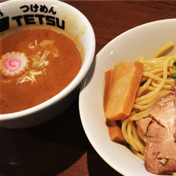

Matsudo, Chiba
Tomita, to me, is hands down the most unforgettable tsukemen experience I’ve ever had. The richness of the noodles, the depth of the broth, the balance of flavors, it all comes together in a way that feels almost unreal. Every bite is juicy and satisfying, with the noodles perfectly chewy and the soup so thick it clings like velvet. What really sets it apart is the subtle citrus kick from the Yuzu powder, which cuts through the heaviness and adds a refreshing lift. It’s a small detail, but it makes a huge difference. The only catch? It’s not exactly around the corner.
The shop’s a bit out of the way, and every time I’ve gone, there’s been a long line snaking outside. But honestly, I get it. People are willing to wait because it’s just that good. If you’re patient and hungry, it’s absolutely worth the trek.
Tomita location on Google MapsSaitama Shintoshin, Saitama
Tokyo Underground also know as Ganja caught my attention from the name alone, how could it not? I was instantly curious, and once I saw photos of their tsukemen, I was practically drooling. My stomach started growling like an angry gorilla, no joke. The noodles looked thick and springy, the broth rich and inviting. It was love at first scroll. What makes Ganja my personal favorite is how close it is to where I live.
The shop itself is spotless, with a calm, laid-back vibe that’s rare among tsukemen joints. No cramped counters or chaotic slurping symphonies, just a clean, peaceful space where you can actually enjoy your meal. And the best part? There’s usually no line at all. I can walk in, sit down, and dig in without the usual wait. Now, if you’re thinking of heading to their main branch in Kawagoe… brace yourself. The line there is legendary. I’ve tried a few times, but it’s always so packed I end up giving up before I even get close.
Tokyo Underground location on Google MapsAkabane, Tokyo
Testu has a really special place for me because it was the very first tsukemen I tried after moving to Japan. That one bowl pretty much opened the door to the whole world of tsukemen and instantly made it my all time favorite food. I still remember going to the Roppongi shop all the time, it kind of became my comfort spot. Sadly, that branch has already closed, which was a huge loss for me.
Luckily, Testu still has other branches in places like Akabane and Ueno. The taste at these shops isn’t exactly the same as the old Roppongi one, it feels a bit different and sometimes not as consistent but they’re still good. The Akabane branch especially comes pretty close, and I’d say it’s worth the trip if you’re craving tsukemen. The only catch is that it’s a bit of a walk from the station, so it takes some effort to get there. Still, whenever I go, it reminds me why I fell in love with tsukemen in the first place.
Tetsu location on Google MapsOmiya, Saitama
Noroshi tsukemen is really good, and honestly the broth is the highlight, it’s thick, rich, and full of flavor, the kind that sticks to the noodles perfectly. The noodles themselves are smooth, chewy, and really tasty, making every bite super satisfying. The only catch is the Omiya branch itself. The shop is a bit small, kind of narrow, and not the cleanest place around. During lunch or dinner time it gets packed, and the line outside can get pretty long, so you’ve got to be ready to wait. Still, once you finally sit down and get that bowl in front of you, all the negatives fade away. The flavor really makes up for the cramped space, and it’s the kind of spot you don’t mind squeezing into just to get another taste.
Noroshi location on Google MapsTokyo Station, Tokyo
Rokurinsha’s Tokyo Station branch has some of the best tsukemen around. The broth is thick and flavorful, and the noodles are smooth, chewy, and perfect for dipping. They even have a fish powder you can add, which gives the soup an extra kick of umami and makes it even tastier.
They’ve got a branch in Ueno too, but the taste there feels a bit different from Tokyo, and another one in Osaki, though it’s a little far from the station. Still, the Tokyo Station branch is definitely the best. The only downside is the line, which is always super long, and the place itself is pretty narrow. But once you finally get your bowl, it’s worth every minute of waiting.
Rokurinsha location on Google Maps